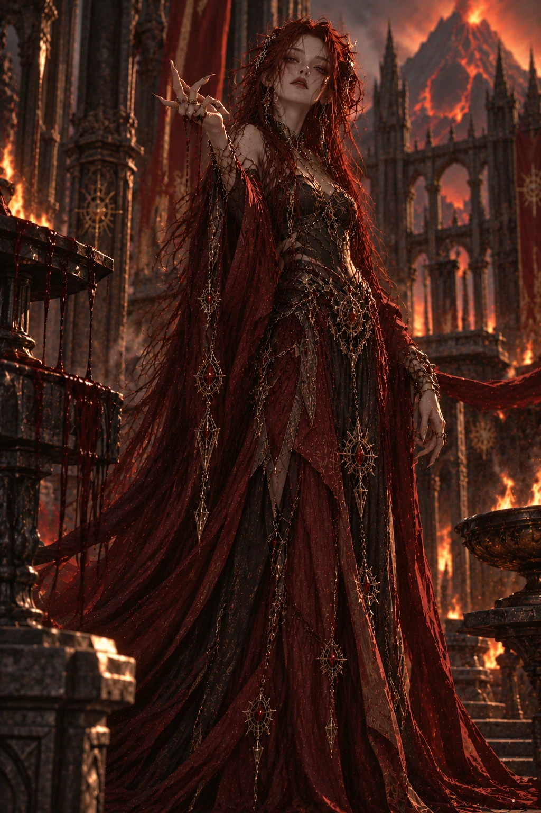
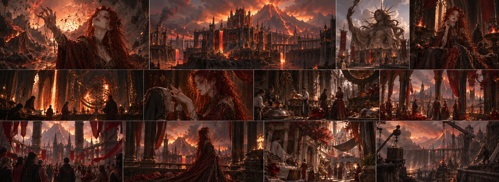

KIRA’S TEMPLE
The places dedicated to Kira in Ignivar are not merely places of prayer. Change, knowledge, and transformation are at the heart of her faith.

Goddess of Destruction
Destruction · Fire · Transformation · Ambition · Knowledge · Progress · Power
For Kira, destruction is not the opposite of creation.
Explore her teaching ↓Destruction · Fire · Transformation · Ambition · Knowledge · Progress · Power For Kira, destruction is not the opposite of creation.
In her eyes, the world can change only when the old is broken apart. Preserving a rotten order is not virtue, but cowardice. If a structure no longer works, it must be torn down; if a thought is wrong, it must be abandoned; if a system obstructs progress, it must be eliminated.
The problem is that, over time, Kira begins to recognize no boundaries in deciding what truly needs to be eliminated. Where others see loss, Kira may see possibility. What others call disaster is sometimes, for her, merely: “A transformation not yet completed.” “Nothing that fears being torn down can truly change.”
Kira is one of the seven sisters who most challenges the existing order.
When she is told “We should not do this,” her first response is often “Why?”
And an answer based only on tradition, fear, or authority does not satisfy her. At first, this quality may be more than merely challenging for her sisters. Kira’s questions sometimes reveal flaws they cannot see. A system working does not mean it is good. A tradition being old does not mean it is right.
Up to this point, Kira and Lena may come surprisingly close to one another. Yet there is a very important difference between them.
Lena asks, “What else can we create?” Kira increasingly begins to ask, “What happens if we eliminate this?”
And for Kira, this question gradually stops being mere curiosity.
Kira hates stagnation. She sees a society continuing to live the same way merely because it is accustomed to it as decay. In her view, progress has a price. And one of people’s greatest hypocrisies is wanting progress while refusing to pay its price. The danger in Kira’s philosophy begins precisely here. Because, beyond a certain point, she may stop asking this question:
“Who agreed to pay this price?” For her, when great outcomes matter enough, individual losses can grow ever smaller. If a city will be saved, a building can be sacrificed. If a kingdom will advance, a tradition may disappear. If thousands of people’s futures will change, a few people’s lives… It is at this point that the gulf between Kira and her sisters widens.
Kira’s problem is not wanting change. It is that she can begin to see people, too, as the raw material of change.
Ignivar is not an easy landscape to live in. Volcanic terrain, dark stones, ash, heat, and dangerous forces beneath the ground shape the kingdom’s surroundings. Yet Ignivar is not a dead hell. Quite the opposite: It is a civilization made habitable by people through engineering. Cities are designed to be protected against natural dangers. Some structures are set within rocks or mountains. People try to control heat and the natural forces underground.
Research areas, engineering structures, and observation centers are important parts of Ignivar’s culture. For this reason, Ignivar’s relationship with Kira is very direct.
Where another kingdom says, “We cannot live here,” Ignivar says, “We do not yet know how to live here.”
This thought carries both Kira’s most impressive side and her most dangerous one.
Kira places an almost sacred value on knowledge. Yet, for her, knowledge is not merely something to learn. It must be used. If a theory is never tested, it remains incomplete in Kira’s eyes. For this reason, there is a strong bond between research and application in Ignivar. Engineers, researchers, and craftspeople do not merely learn existing methods; they are encouraged to change and improve them.
Failure is not always a disgrace. Sometimes, a failed experiment can form the foundation of the next discovery by teaching what is not possible. Yet the danger in Kira’s thought returns to the question of boundaries: Does being able to do something mean that we should do it? Kira can answer “yes” to this question much more readily than her sisters.
Kira’s fire does not mean only anger or war. Fire destroys. But it also transforms. Metal is shaped in fire. In the cold, fire preserves life. The old can burn away, leaving behind space in which something else can grow. For this reason, fire is one of the perfect symbols of Kira’s philosophy: Progress when controlled. Disaster when control is lost.
Perhaps Kira’s tragedy lies precisely here. While teaching others to control fire, she increasingly refuses to accept where she herself must stop.
The people of Ignivar have a more complicated relationship with Kira than the other goddesses have with their peoples. Kira is admired. She is feared. And sometimes, both happen at once. When engineers solve a problem, when researchers examine something unknown, when craftspeople try a new method, when people try to change something that seems impossible, her name may be spoken.
Perhaps fewer people ask Kira for safety than ask Dara. What people ask of Kira is more: Not courage, but the will to cross a boundary. Yet there is also an old fear in Ignivar. Attracting Kira’s attention may not always be a blessing.
Because when Kira begins to take an interest in something, she may not allow it to “remain as it is.”
Kira’s extraordinarily thin, almost sickly-looking body is an important part of her character design. We do not treat this appearance simply as “elegant” or as an aesthetic feature. Kira also pushes herself beyond her limits. Sleep, rest, the body’s needs, and physical limits can become obstacles to overcome for her.
For this reason, her body shows that Kira herself pays the price of her own philosophy. She is not someone who imposes what she demands from others only on others. She can consume herself, too. And perhaps this is why it is harder for her to recognize the danger in her own behavior.
Because the thought “I am paying a price, too” can lead her to believe it gives her the right to determine the price others must pay.
Kira constantly tests her sisters’ boundaries. She may come close to Lena in her desire for change, but they differ in method. Dara may see Kira’s uncontrolled power as a danger. Talia questions whether Kira’s aims justify their consequences. Yuna, in turn, may see that the change Kira creates could disturb the world’s balance. Nora perhaps bears one of the heaviest burdens concerning Kira:
Seeing the possibilities of where the paths she might choose could lead. In the face of all this, Kira may ask the same question: “Do you want to stop me because I am wrong, or because you are afraid of me?” And what is unsettling is this: Sometimes, the answer can be both.
Kira is extremely intelligent, curious, strong-willed, and obsessive. When a subject interests her, she finds it difficult to leave it at the surface. She may work on the same problem for hours, days, or even longer. Social politeness is not among her priorities. She does not entirely disregard what people think of her; yet when she believes she is right, she can give up being loved.
Kira’s darkness comes more from certainty than anger. The moment she begins to believe she sees the future more clearly than others, their objections can appear to her as ignorance, fear, or weakness. And Kira is not at her most dangerous when she shouts.
It is the moment she calmly says, “There is no other way.”
“Nothing that fears being torn down can truly change.”
Kira

The places dedicated to Kira in Ignivar are not merely places of prayer. Change, knowledge, and transformation are at the heart of her faith.
Rather than trying to defeat nature, Ignivar’s people have learned to manage its dangers through engineering. Settlements are designed to adapt to the harsh geography.
The idea that knowledge must not only be preserved, but tested is the foundation of Ignivar’s culture.
Depictions of Kira carry a sense of movement and transformation rather than victory. Her statues often show a figure moving forward rather than a static ruler.
Ignivar’s survival depends more on engineering, metalwork, and understanding the environment than on military power.
In Ignivar, fire is not merely a symbol of annihilation. It warms, shapes, and produces. Yet when it loses control, that same power can destroy everything.
Life continues among ash and volcanic stones. Ignivar is not a dark, dead land, but an active civilization that has learned to live in a difficult landscape.